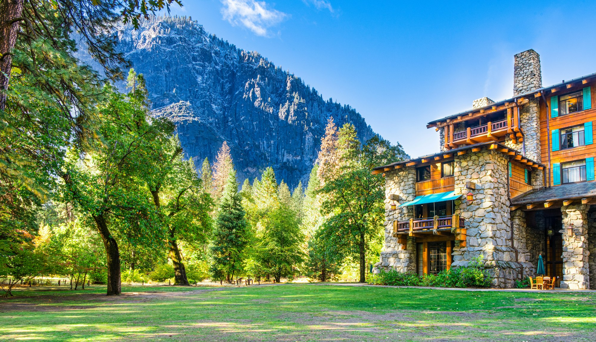

出发前必须定的四件事
优胜美地的资源是"限额制"的：营位、园内住宿、热门许可都要提前抢。 顺序建议如下——先定住和许可，再定交通，最后排行程。
什么时候去
春季看瀑布、夏季最热闹、秋季人最少、冬季最安静。季节直接决定你能去哪里。
住哪一夜
园内住宿与营位通常提前数月订满，是规划中最紧的一环，应优先解决。
要不要许可
荒野过夜、半圆顶登顶、部分长线徒步都需要许可，部分通过抽签发放。
怎么进园
自驾最灵活但停车难，也可选择公共交通或园外住宿加接驳车。
门票与费用
| 票种 | 费用 | 有效期 | 说明 |
|---|---|---|---|
| 私家车门票 | 约 35 美元 | 7 天 | 含车上所有乘客，最常用的票种。 |
| 摩托车门票 | 约 30 美元 | 7 天 | 按车辆计费。 |
| 个人门票 | 约 20 美元 | 7 天 | 步行、骑行或乘巴士入园者。 |
| 国家公园年票 | 约 80 美元 | 1 年 | 覆盖全美多数国家公园，年内多次入园划算。 |
| 露营费用 | 约 20–40 美元 / 夜 | 按夜 | 因营地设施与季节而异，另需预约费。 |
交通与园内班车
怎么进园
- 西入口（大橡树坪）：从旧金山方向进入，车程约 4 小时，是最常用的入口。
- 南入口：从洛杉矶/弗雷斯诺方向进入，靠近瓦沃纳与巨杉林。
- 东入口（蒂奥加路）：从太浩湖/猛犸湖方向进入，仅夏季开放。
- 阿奇罗克入口：谷底西南方向，离谷底最近，旺季易拥堵。
园内交通
谷底有免费班车系统贯穿主要观景点与停车场，是避开停车难题的最佳方案。 把车停在约塞米蒂村或咖喱村的大型停车场，然后全程靠班车与步行。
住哪里：营地与住宿

园内 vs 园外
园内：省去每天往返的奔波，能赶上清晨与傍晚最好的光线， 但价格高、名额紧，需提前数月预订甚至抽签。
园外：选择更多、价格更灵活，但单程车程常在 30 分钟到 1.5 小时， 旺季还要为入口排队预留时间。
园内营地
谷底与周边共十多个营地，多数可提前预订，部分保留先到先得营位。
园内住宿
从历史酒店到木屋、帐篷旅馆都有，条件与价格跨度较大。
园外小镇
西侧与南侧入口外均有小镇，住宿与餐饮选择更多。
许可与预约
园区实行"该收的费用收清楚、该限的人数限到位"的管理方式。 以下几类需要额外许可或预约：
| 项目 | 是否需要 | 获取方式 | 难度 |
|---|---|---|---|
| 园内营地 | 需要预约 | Recreation.gov 在线预订 | 提前数周至数月 |
| 荒野过夜 | 需要许可 | 抽签 + 剩余名额在线申请 | 竞争激烈 |
| 半圆顶登顶 | 需要许可 | 钢索开放期抽签 | 竞争激烈 |
| 常规日间游览 | 不需要 | 购票入园即可 | 无门槛 |
各类许可的时间节点与申请流程，详见 许可与预约。
行程模板
一日游：只取精华
- 07:00 从西门进园，在隧道观景台停留拍三地标合影。
- 09:00 谷底停车，走库克草甸环线（约 1.5 公里，平缓）。
- 11:00 下优胜美地步道，近距离看优胜美地瀑布。
- 13:00 约塞米蒂村午餐，稍作休息。
- 15:00 前往镜湖，或改走新娘面纱瀑布短步道。
- 17:30 回隧道观景台或哨兵草甸看日落，然后出园。
两日游：谷底 + 高点
- 第一天：按一日游节奏走完谷底，夜宿园内或园外。
- 第二天上午：挑战雾径至弗纳尔瀑布（往返约 4 公里，陡）。
- 第二天下午：上冰川点，俯瞰半圆顶与全谷。
- 第二天傍晚：留在冰川点看日落，这是全程的高潮。
三日游：加入巨杉林
- 第三天：前往马里波萨巨杉林，走巨杉环线与灰熊巨杉步道。
- 替代方案：若为夏季且蒂奥加路开放，可改去图奥勒米草甸避暑。
- 返程：从南入口离开，顺路在瓦沃纳停留休整。
打包清单
证件与电子
门票/年票、身份证件、手机与充电宝、离线地图、车充。
穿着
防滑徒步鞋、速干衣、保暖中层、防风外套、宽檐帽。
饮水与食物
水壶或水袋（每人每天 2 升起）、高能量零食、午餐简餐。
防护
防晒霜、墨镜、驱虫剂、雨衣（走雾径必备）。
应急
头灯、急救包、哨子、保温毯、备用电池。
其他
望远镜、相机与备用电池、垃圾袋、防熊储物袋。
安全与应急
- 告知行程：把路线与预计返回时间告诉同行者或家人。
- 不要独自冒险：长线徒步尽量结伴，避免单独走偏僻路线。
- 留意天气：山区天气变化快，午后雷雨常见，及时下撤。
- 水流危险：融雪期的河水湍急且极冷，绝不可下水或靠近湿滑岩石。
- 保持体力：谷底海拔约 1,200 米，高地超过 2,600 米，注意放慢节奏。